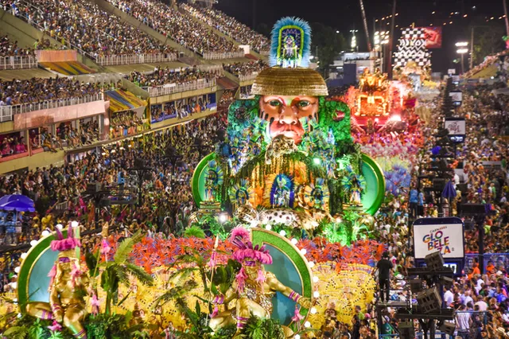
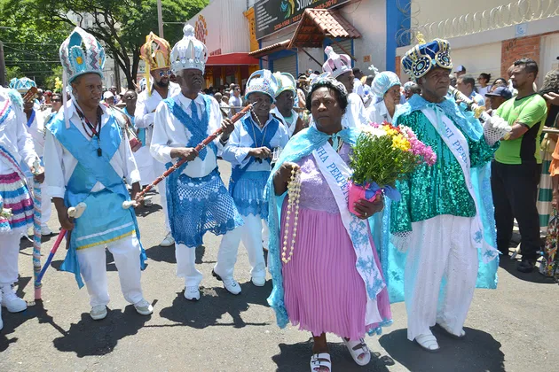
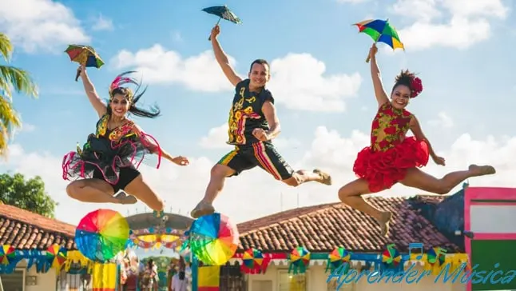
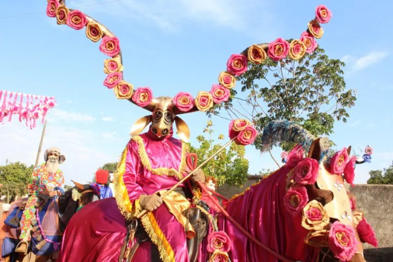

Festas e Tradições do Folclore brasileiro!
Descubra algumas das festas e tradições mais fascinantes do Brasil!
Festa de Bumba meu boi
A festa do Bumba meu boi é uma festa feita nas regiões Norte e Nordeste do Brasil, que teve origem no folclore brasileiro.
A Festa de Bumba-meu-boi é uma das mais icônicas do folclore brasileiro, especialmente nas regiões Norte e Nordeste. Originada no período colonial, esta celebração mistura elementos de teatro popular e música, com danças e rituais que narram a morte e ressurreição de um boi. A lenda gira em torno de Pai Francisco e Mãe Catirina, que precisam vender o boi para sobreviver. Quando o boi morre, dependendo da versão, um padre ou um pajé aparece e ressuscitao boi.

Festa junina
A Festa Junina é uma celebração que ocorre em homenagem a São João, o padroeiro das festas juninas. Originariamente, as festividades eram dedicadas aos cultos agrários e ao solstício de verão, mas com a chegada dos colonizadores portugueses, adquiriram um caráter cristão. As celebrações incluem danças típicas como a quadrilha, comidas tradicionais como a canjica e o milho cozido, além de fogueiras, que simbolizam purificação e proteção. As vestimentas, inspiradas em roupas caipiras, e a música, como o forró e o xote, completam a atmosfera festiva, unindo crenças religiosas e culturais em uma só festa.

Carnaval
O Carnaval é talvez a festa mais conhecida do Brasil, com raízes que remontam aos tempos coloniais, influenciado pelas tradições europeias. No entanto, ele ganhou características próprias no Brasil, misturando samba, desfiles de escolas de samba e blocos carnavalescos. Cada escola de samba conta uma história em forma de enredo, com carros alegóricos e fantasias elaboradas, retratando temas da cultura brasileira, lendas e personagens folclóricos. O Carnaval é uma explosão de cores, música e dança, celebrando a liberdade, a alegria e a resistência cultural do povo brasileiro.
Congada
A Congada é uma festa afro-brasileira, originária de Minas Gerais, que mistura rituais católicos e africanos. Celebrada principalmente no mês de junho, durante a Festa de Corpus Christi, a Congada honra os santos e reis africanos, como São Benedito e Nossa Senhora do Rosário. A festa é marcada por danças com passos lentos e coreografias rituais, além de trajes coloridos e adereços que representam a nobreza africana. Os participantes, conhecidos como "congos", dançam ao som de tambores, agogôs e caxixis, enquanto desfilam pelas ruas de comunidades negras, em cortejos que celebram a resistência e a memória cultural africana. A Congada é uma expressão de resistência e identidade, que mantém viva a herança africana no Brasil, misturando religiosidade, danças e música.
Folia de Reis
A Folia de Reis é uma tradição religiosa que ocorre entre o Natal e o Dia de Reis (6 de janeiro) em várias regiões do Brasil. Originária de Portugal, essa festa celebra a visita dos Três Reis Magos ao Menino Jesus. Os foliões, caracterizados como três reis, saem em grupo, cantando e tocando músicas típicas que narram a história da visita dos Reis Magos e os presentes que levaram ao Menino Jesus. As danças e cantos são realizados em casa em casa, pedindo alimento e dinheiro, que são utilizados para ajudar a comunidade local. A Folia de Reis é uma manifestação de fé e devoção, misturando elementos do catolicismo com práticas culturais indígenas e afro-brasileiras, como a utilização de danças e instrumentos rítmicos, como o pandeiro e o violão. É uma celebração que reflete a integração entre as culturas que formam o Brasil.

Frevo
O Frevo é uma das expressões mais vibrantes da cultura pernambucana, especialmente no Recife. Surgido no final do século XIX, o Frevo mistura elementos africanos, indígenas e portugueses, resultando em uma dança ágil e intensa, com passadas rápidas e movimentos acrobáticos. A festa do Frevo ocorre durante o Carnaval, quando as ruas se enchem de blocos e foliões dançando ao som de músicas que possuem ritmo acelerado e agudo. Os músicos, conhecidos como "frevadores", tocam instrumentos como a "flauta-doce" e "trombone", criando um som único que caracteriza o Frevo. A dança é marcada por passos complexos e rápidos, saltos e rodopios, onde a sombrinha (um guarda-chuva colorido) é usada como um acessório de dança. O Frevo é um símbolo de resistência cultural e alegria, preservando a identidade cultural do povo pernambucano.
Cavalhadas
As Cavalhadas são festas populares que ocorrem em diversas cidades do interior do Brasil, especialmente em Minas Gerais. Originadas durante o período colonial, as Cavalhadas representam uma recriação das batalhas medievais entre cristãos e mouros. Durante a festa, grupos de cavaleiros enfrentam-se em encenações que misturam dança, música, e um jogo simbólico de luta. A cavalhada é um espetáculo onde os cavaleiros, vestidos com armaduras e bandeiras, simulam combates, exaltando o espírito de coragem e valor. A festa inclui o "toque da trombeta" e a "cavalaria", onde homens montados em cavalos realizam saltos e manobras. As Cavalhadas são um exemplo de como o Brasil incorporou tradições europeias em sua cultura, adaptando-as ao seu contexto e criando uma manifestação folclórica que celebra a religiosidade e a história.
